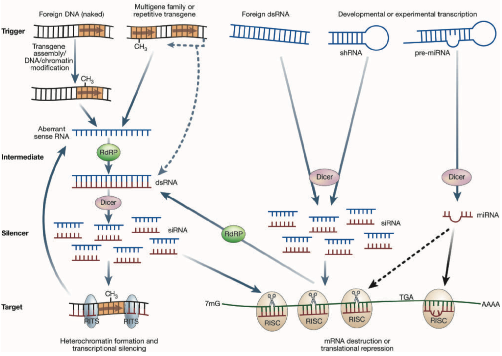
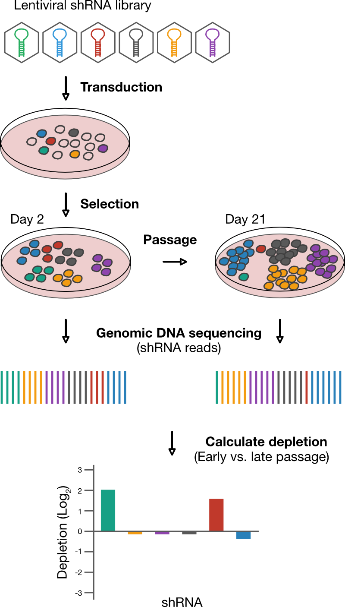
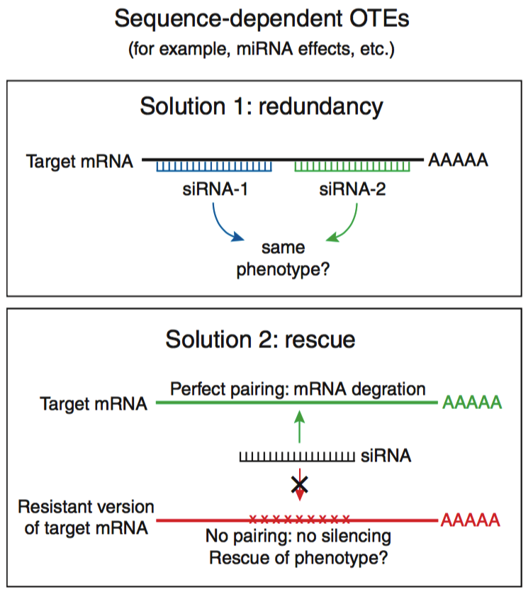

RNAi Gene Enrichment Ranking
- Table of Contents
I. Goals
This primer will sketch the principles underlying the RNA interference Gene Enrichment Ranking (RIGER) analysis method which has been used successfully to identify gene ‘hits’ in both RNAi- and CRISPR-based functional screens. This discussion leans heavily on statistical concepts for Gene Set Enrichment Analysis. We aim to convey how the approach works from an intuitive standpoint before diving into a more detailed discussion. By then end of this discussion you should:
- Understand
II. Background
RNA interference
Discovery
RNA interference (RNAi) was discovered in 1998 by Craig Mello and colleagues as a mechanism by which C. elegans could defend itself against foreign or invading nucleic acid sequences (Mello 2004). The canonical trigger for RNAi are double-stranded RNA (dsRNA) precursors which are processed into shorter, small interfering RNA (siRNA) by the endoribonuclease Dicer. These siRNA represent the guide sequences for the RNA-induced silencing complex (RISC) which is implicated in sequence-specific gene silencing (Figure 1).

Applications
The demonstration that sequence-specific RNAi could be triggered by stable expression of a stem-loop short hairpin RNA (shRNA) that mimicked miRNA (Paddison 2002) laid the foundation for viral-vector libraries expressing shRNA that could disrupt expression on a genome-wide level (Paddison 2004, Silva 2005).
This is commonly used in functional screens to identify genes associated with a particular phenotype: An shRNA expression library is introduced into cells such that any particular cell stably-expresses a single shRNA; transduced cells are subjected to experimental conditions; a phenotype of interest is scored and which is then easily linked to an underlying gene via the shRNA harbored within those cells. For instance, Brummelkamp and colleagues identified genes that potentiated the effects of the anti-cancer agent Nutlin-3, a small-molecule activator of the TP53 protein, by identifying shRNAs that disabled growth-arrest in nutlin-3-treated cells (Brummelkamp 2006). In a variation of this protocol, cell essential genes are identified by serially passaging transduced cells collectively, then quantifying, typically through deep-sequencing, temporal changes in the quantity of each particular shRNA template in the population (Figure 2; Silva 2008). In this case, a target gene with a positive effect on cell fitness will correspond to a shRNA with reduced representation as reducing expression of the target impedes growth.

Methodological concerns
As is often the case, the initial euphoria surrounding the experimental and therapeutic possibilities of RNAi gave way to a growing awareness of the pitfalls. Among the most pernicious are ‘off-target effects’ (OTE) where an shRNA generates a phenotype via a target gene or process different from the originally intended target. Such false-positives can have significant consequences, as evidenced by the inability of industry groups to validate drug targets identified using shRNA in academic laboratories (Prinz 2011).
Minimizing false-positives: Rescue and redundancy
In order to minimize false-positives arising from off-target effects of RNAi, researchers have proposed rules of thumb to follow - the ‘two Rs’ (Figure 3) (Echeverri 2006).

One rule used to validate an shRNA is to ‘rescue’ the phenotype by either expressing the intended target gene to levels that might overcome the RNAi or expressing an orthogonal variant such that it is no longer recognized. Such approaches may not often be feasible and are technically challenging, as it may be difficult to express the gene appropriate levels to overcome the effects of an shRNA or identify orthogonal sequences for a gene. Moreover, rescue experiments are generally difficult to perform en masse, and may be more practical with a few candidates. It should also be kept in mind that successful rescue does not necessarily exclude the possibility of off-target effects.
A second approach involves ‘redundancy’ in which multiple silencing reagents are used to target the same gene but at different regions in the sequence. The underlying rationale for redundancy is that multiple RNAi agents are unlikely to act via off-target effects to produce a phenotype. An attractive aspect of this approach has been that it can be implemented as part of large-scale screen simply by supplementing an expression library with additional sequences per target.
In practice, the degree of redundancy required can depend on many factors that include: the type and quality of RNAi reagent; organism; nature of the pathway being targeted; and the specificity of the phenotype. Moreover, attempts to increase the number of genes targeted can compound the issue of multiple hypothesis testing errors: The probability that multiple shRNAs targeted to a given gene will have off-target effects increases with the number of genes targeted.
These caveats prompted a call for greater caution when interpreting the results of RNAi-based studies (Kaelin 2012). Around the same time, statistical methods were being developed in attempt to discern robust hits from large-scale screens (Birmingham 2009).
III. RNAi Gene Enrichment Ranking (RIGER)
What: Statistic called the RNAi gene enrichment ranking (RIGER) (Luo 2008).
Goal: To define genes as hits based on shRNA depletion data.
Why: Inclusion of all shRNAs for a gene increases the power of the screen, compensating for the variation in gene suppression and off-target effects.
Output: A rank ordered list of genes, based on the depletion or enrichment of the shRNAs that target them.